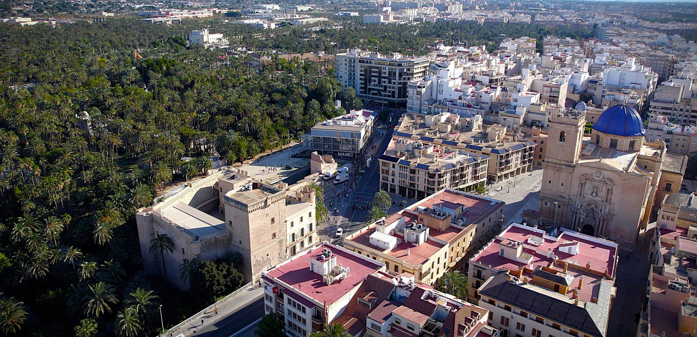

El Palmeral de Elche
El Palmeral de Elche es el mayor de Europa, con más de 200.000 palmeras. Este oasis urbano tiene su origen en la época musulmana y fue declarado Patrimonio de la Humanidad por la UNESCO en el año 2000.
El Misteri d'Elx
Una representación teatral sagrada que se celebra en la Basílica de Santa María cada mes de agosto. Es una joya del teatro medieval europeo y también Patrimonio Inmaterial de la Humanidad.